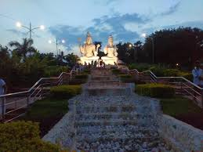

Kailasagiri is a beautiful hilltop park located in Vizag, offering panoramic views of the city and the Bay of Bengal. The park is named after the Hindu deity Lord Shiva, who is also known as Kailasa. Kailasagiri is a popular spot for both locals and tourists to relax, take a stroll, and enjoy the scenic surroundings. The park features well-maintained gardens, walking paths, and several statues of Hindu gods and goddesses. One of the main attractions of Kailasagiri is the giant statue of Lord Shiva and Parvati, which stands tall and can be seen from various parts of the city. Visitors can also take a ropeway ride to reach the park, which provides a thrilling experience and stunning views during the ascent. There are several food stalls and eateries within the park where you can enjoy local snacks and refreshments. If you’re visiting Vizag, don’t miss the chance to explore the serene beauty of Kailasagiri.
